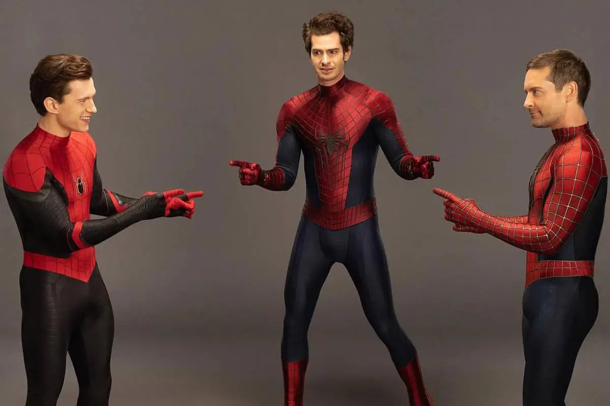
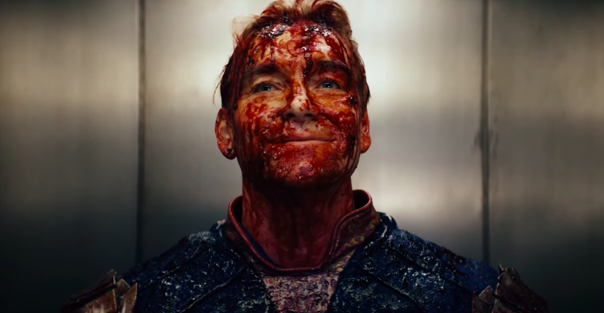
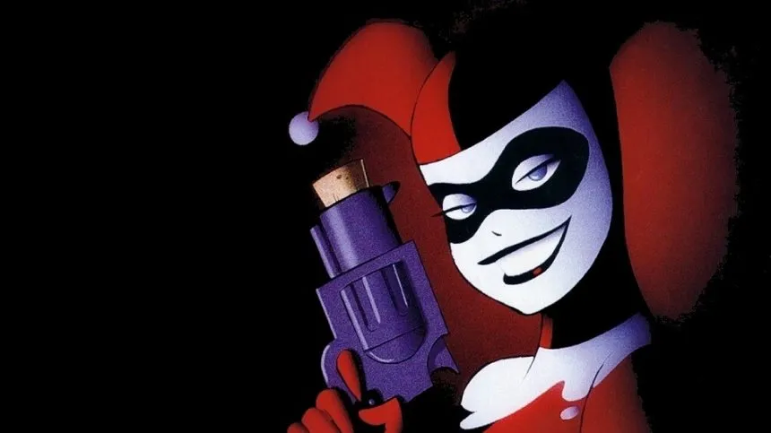
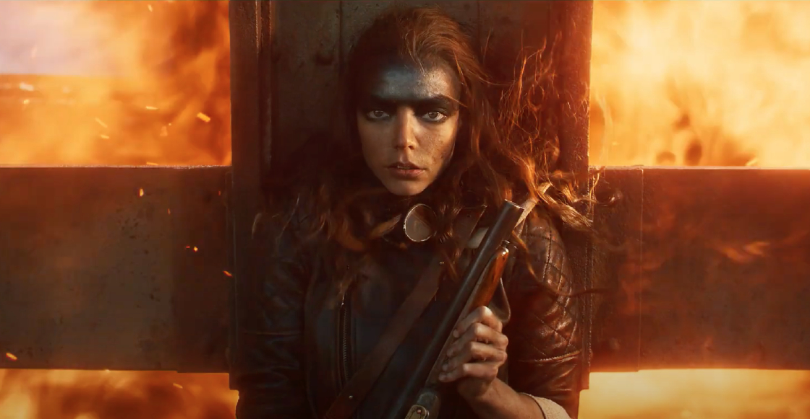

-

Spiderverse confirmado
Recientemente se filtro la noticia de que la nueva pelicula de spiderman reuniria las tres versiones de las peliculas anteriores, estamos ansiosos por el estrno de esta nueva cinta.
-

The Boys nueva temporada
Por fin la espera termino, apunta en tu calendario la siguiente fecha por que la nueva temporada de The Boys llega a prime este 5 de diciembre, así que ve comprando palomitas.
-
Nueva pelicula de Suicide Squad
Se ha revelado que Warner Brothers ya esta trabajando en el nuevo guión para la siguiente pelicula de Escuadrón Suicida, confirmando que la mayoría de los personajes se mantienen.
-
Se estrena nueva serie animada
Ya se habían tardado, WB revela que estan trabajando en una serie animada del Escuadron Suicida, una vez más la serie se centrara en los acontecimientos de la primera entrega, sin embargo con una trama mas cruda y sangrienta.
-
Mad Max estrenara pelicula nueva
Confirman que la nueva pelicula de la saga de Mad Max ya esta terminada y lista para el proximo estreno en cines, solo faltan algunos toques en la edición y estara listo para ver una vez más a Anya Taylor.